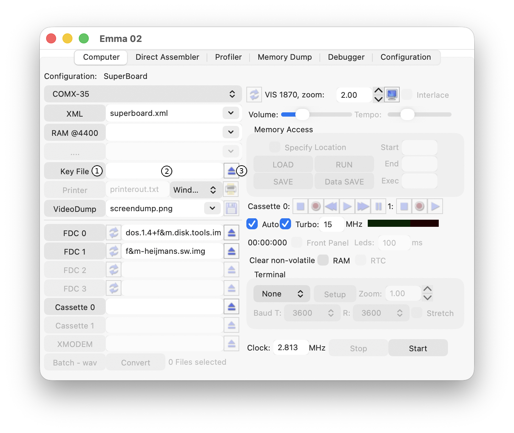

The Key File function lets you specify a set of keys (or text) to be typed into the emulated computer automatically as defined in the file. The Key File must be specified before starting the emulated computer or before performing a Reset.
Note: On start-up or reset the specified key file will be read by Emma 02 and every character in the file will be sent to the emulated computer as a key press. A key file must be a regular text file.

To browse for a key file use the Key File button (1) or type a file name in the text field (2). To eject the key file use the eject button (3) or remove the filename from the text field.
Note: Specify one extra empty line at the start of the COMX key file to allow the COMX to start BASIC (see the key file example in the Comx directory).
As only capital characters are used in COMX BASIC, the Key File function for the COMX will translate all capital characters in the file as a non-shift key press. I.e., capital A in the file will also result in an A on the COMX. To get the shift A character typed on the COMX you need to specify a in the file.
Included are some BASIC key file examples: one very simple (COMX Key File Example), Recall BASIC, which when used as key file will recover the BASIC program after a reset (you need to include 0 REM as first line), and Trainspotting, which is the listing of that game and can be used to re-type the complete game.
Note: Specify one extra C at the start of the TMC-600 key file to allow the TMC-600 to start BASIC.
Important: If the key file uses both capital and lower case characters press Caps Lock at start-up to allow input of lower case characters.